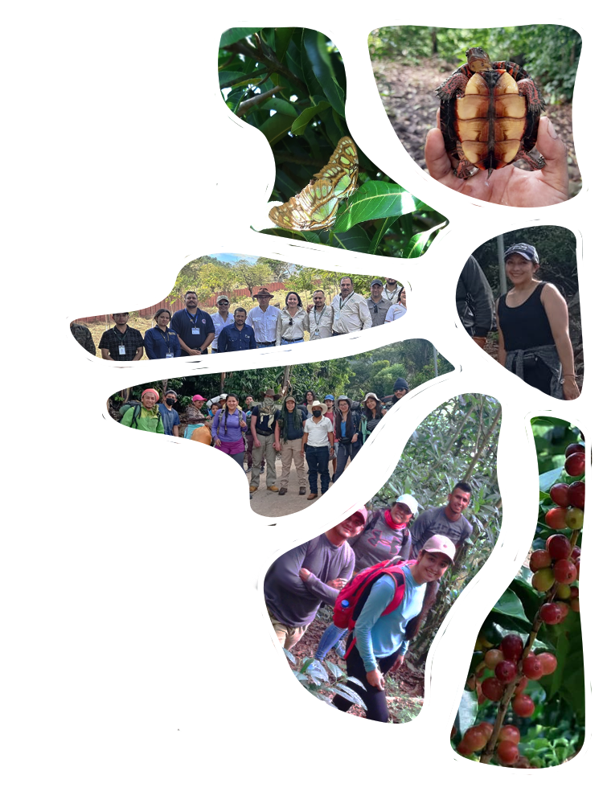
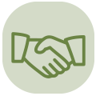
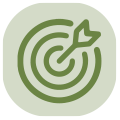
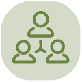

Promovemos la conciencia ambiental, la formación, los valores y las prácticas sostenibles en las comunidades donde trabaja nuestra red.
En la región de la red, se percibe alto potencial turístico. Por eso, fortalecemos el turismo sostenible a través de convenios de cooperación entre los sitios turísticos establecidos en el programa y la Red Enredémonos por el Corazón Verde, desarrollamos perfiles para nuevos sitios
eco-turísticos, capacitamos y profesionalizamos al personal para brindar un servicio de excelente calidad, y promovemos nuestra oferta turística mediante un subprograma de promoción y divulgación con material visual adecuado para las ventas.

Fortalecemos el turismo sostenible mediante convenios de cooperación entre los sitios turísticos establecidos en el programa y la Red Enredémonos por el Corazón Verde.

Desarrollamos perfiles de nuevos sitios eco-turísticos para ampliar nuestra oferta y promover experiencias auténticas que cuidan la naturaleza y benefician a las comunidades.

Capacitamos y profesionalizamos personal para brindar un servicio de excelente calidad y promovemos nuestra oferta turística a través de un subprograma de promoción y divulgación con material visual para las ventas.